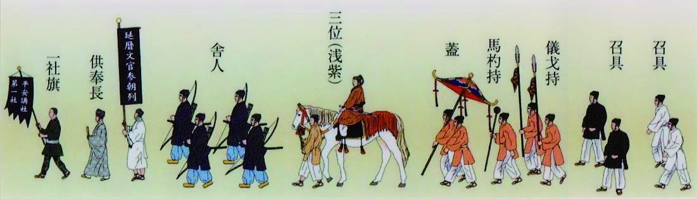
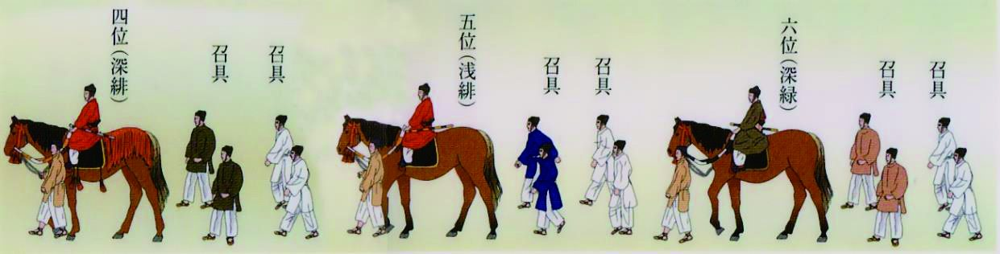
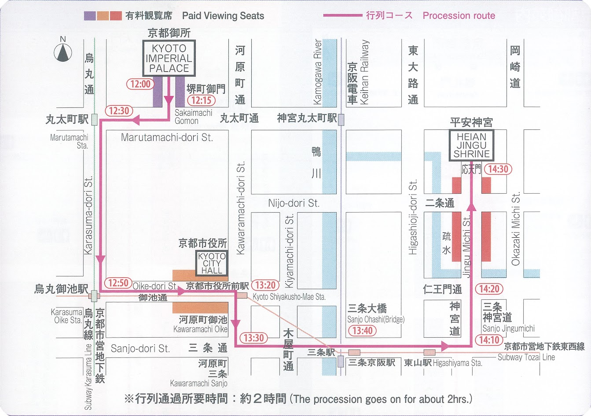

約20年に一度の大役
2028年、大宮学区は時代祭
「延暦文官参朝列」を担当します。
この役目が巡ってくるのは、約20年に一度。
地域の皆さまとともに、大宮学区の
歴史の1ページを担う貴重な機会です。
「参加して良かった」「楽しかった」。
そう思える時代祭を、地域の皆さまと共に。
まずは、参加することで得られるものをご紹介します。
普段は袖を通すことのない本格的な装束をまとい、千年の歴史を体感できます。
明治から続く時代祭の一員として、大切な伝統を次の世代へ受け継ぎます。
準備から当日まで、町内を越えた新しいつながりと思い出が生まれます。
装束姿の記念写真は、ご家族にとっても忘れられない一枚になります。
次に巡ってくるのは約20年後。この貴重な機会を、地域みんなで支えます。
平安装束をまとった参加者の様子（写真は後日掲載予定です）
ほとんどの方が初めての参加です。どうぞ安心してご検討ください。
着付けの様子（写真は後日掲載予定です）
2028年の時代祭に向けて、行列に参加する方と、裏方として支える方を募集しています。
ご自身に合った関わり方をお選びください。
平安装束をまとい、御所から平安神宮まで約5kmを歩きます（一部は騎乗）。
こんな方に：お祭りに出てみたい方、装束を着てみたい方、ご家族で思い出を作りたい方。
行列には出ませんが、祭りの進行を支える大切な役です。できる作業だけのご参加も歓迎です。
こんな方に：人と関わるのが好きな方、段取りが得意な方、当日だけ手伝いたい方。
準備・運営を支える裏方スタッフ（写真は後日掲載予定です）
「まだ迷っている」という方も、まずはお気軽にご応募・お問い合わせください。
※ご質問だけでも歓迎です。
ここからは、なぜ大宮学区がこの大役を担うのか、その背景をご紹介します。
募集情報をご覧になった方も、ぜひ知っていただけると幸いです。
弘法大師空海は、当時御所に奉納する瓦職人の宿であった現在の神光院で9日間の修行を行いました。また、伝教大師最澄は現在の薬師山に草堂を結び、これが現在の一様院となっています。大宮学区は平安京の歴史と深く結びついている土地です。
明治維新に伴う事実上の東京遷都により、京都は人口の3分の1が転出し衰退の危機に直面しました。これを打破するための復興計画の一環として、1895年に平安遷都1100年記念祭が行われ、時代祭が始まりました。
時代祭を実行する市民組織「平安講社」の中で、大宮学区は「第一社」に属しており、歴史を遡る時代行列の最後尾を務め、祭祀の主体となる神幸列の前を進む「延暦文官参朝列（えんりゃくもんがんさんちょうれつ）」という極めて重要な役割を担当しています。
延暦文官参朝列とは、どのような行列なのか。
大宮学区が担うこの行列は、平安時代の文官たちが御所へ参内する様子を再現したものです。
衣装の色は位階を示し、三位（浅紫）・四位（深緋）・五位（浅緋）・六位（深緑）と役ごとに異なります。

先頭から：社旗 → 供奉長（延暦文官参朝列） → 舎人 → 三位（浅紫・乗馬） → 蓋 → 馬杓持 → 儀戈持 → 召具

四位（深緋）→ 五位（浅緋）→ 六位（深緑）の順。各役人はそれぞれ召具（従者）2名を従えて行進します。
延暦文官参朝列の全景（写真は後日掲載予定です）
※以下は過去の事例に基づく概略であり、時間は変更となる場合があります。

| 9月中旬〜下旬 | 全体説明会（大宮小体育館）、衣装蔵出し（平安神宮）、着付練習 |
|---|---|
| 10月中旬 | 宣状授与祭（平安神宮）、着付練習、予行練習 |
| 10月21日 | 衣装蔵出し、体育館ブルーシート設営、試着・着付指導、夜間警備 |
| 07:30〜 | 参加者受付・着付開始（大宮小体育館） |
|---|---|
| 08:45頃 | 行列行進リハーサル・記念写真撮影 |
| 10:00頃 | 大宮小学校から御所へ出発（タクシー・バス等） |
| 10:30頃 | 行在所祭（あんざいしょさい）、昼食 |
| 12:30頃 | 行列開始・列立て、出発準備 |
| 13:30頃 | 延暦文官参朝列 出発 |
| 16:30頃 | 還幸祭 |
| 17:00頃 | バスにて大宮小学校へ帰還 |
| 17:45頃 | 大宮小学校到着・着替え・解散 |
衣装の片付け・箱詰め、平安神宮への返却、最終点検を実施します。
準備から当日まで、大宮学区の皆さまと共に。
「参加して良かった」と思える一日を目指します。
時代祭を終えての集合写真（写真は後日掲載予定です）
運営方針・透明性の確保:
大宮学区が当番学区となるには約400万円の資金が必要であり、長年にわたり町内会連合会から毎年積立を行ってきました。目的を持って積み立てた資金の適正な運用を守り、継承されてきた行事を町内会員の総意のもと、透明性をもって民主的に運営します。
組織構成:
会長、副会長、事務局、会計、監査役、行列実行委員（各部門担当）により構成されています。